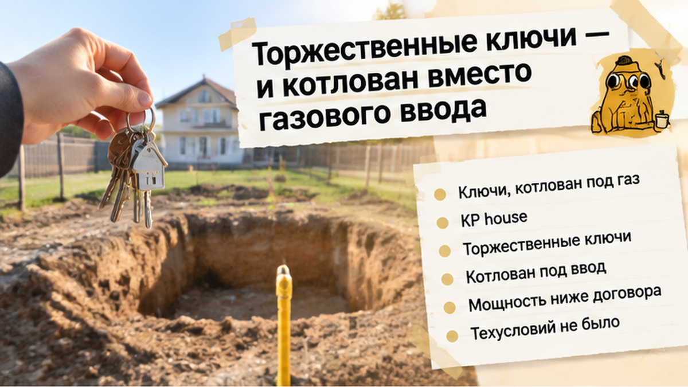
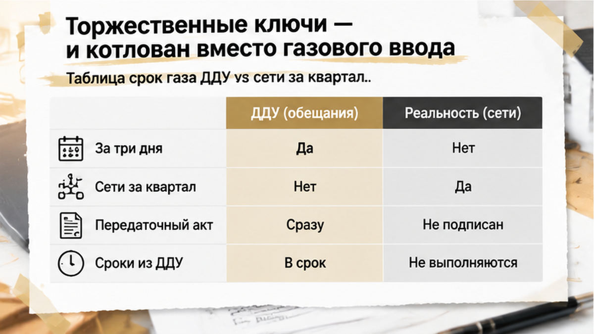
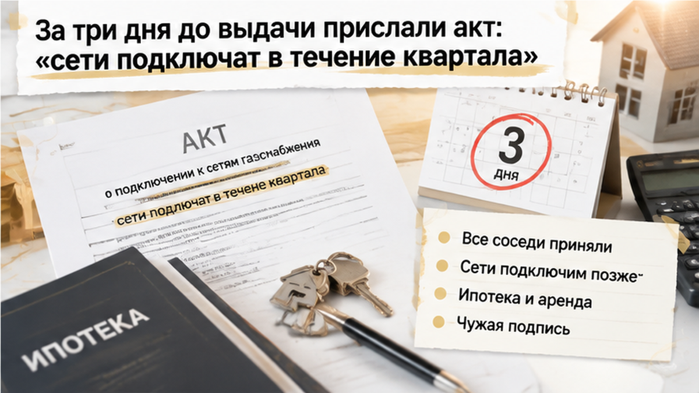
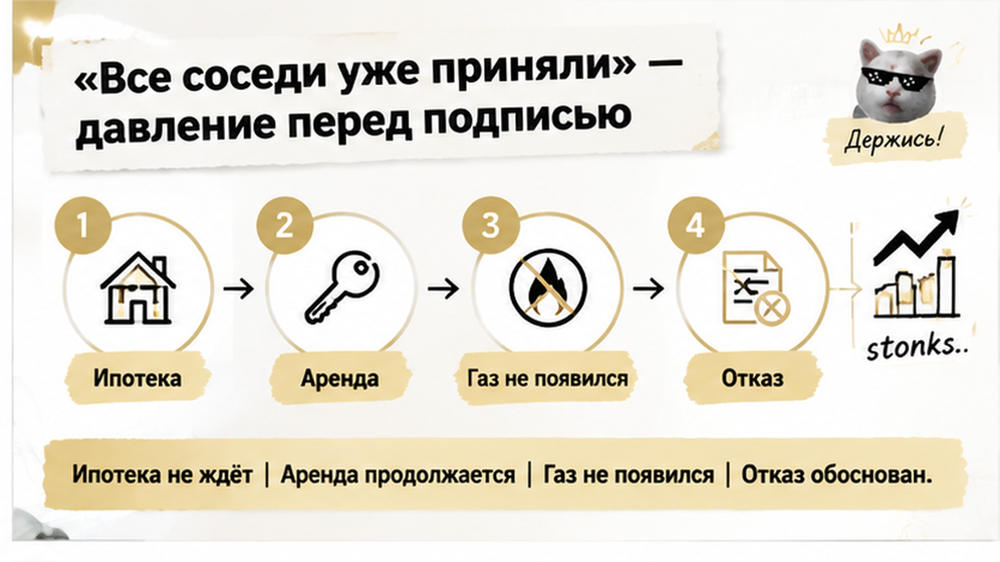
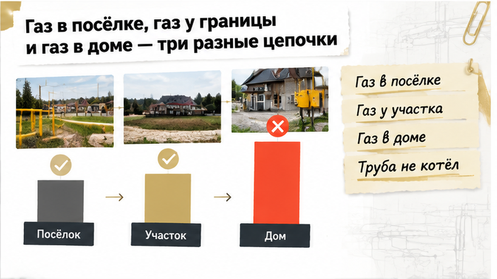
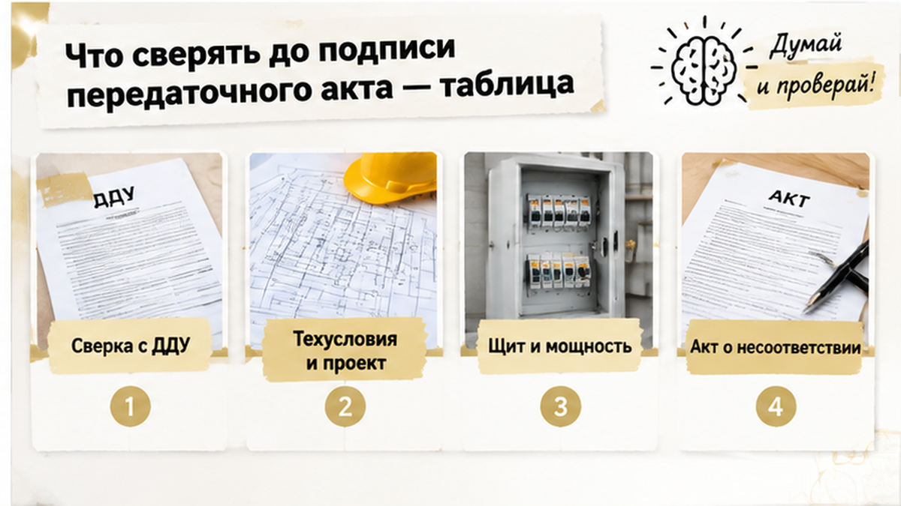

За 3 дня до ключей семье в коттеджном посёлке под Тюменью предложили принять дом без готового газа — ипотеку и аренду платить нужно уже сейчас, а сети обещали подключить ещё в течение квартала. На участке вместо газового ввода был котлован, а электрическая мощность оказалась ниже договорной. После торжественного вручения ключей покупателям предложили перейти к передаточному акту и решить, готовы ли они принять дом в таком состоянии. Ключи были в руках, но вопрос оставался не праздничным: можно ли считать дом пригодным для зимовки, если обещанные коммуникации ещё только предстоит довести?
Я Святослав Шакин, The Риэлтор, Тюмень. Разбираю покупку домов и новостроек от застройщиков так, чтобы обещания можно было сверить с документами до подписи. Такие разборы — в Telegram и MAX.


Дом купили по договору долевого участия, ДДУ, в границах малоэтажного жилого комплекса. Здесь застройщик привлекает деньги дольщиков и обязуется построить индивидуальные дома вместе с предусмотренными инженерными системами. На приёмке проверяют не только стены и крышу, но и то, какие сети он должен подготовить к договорному сроку.
На участке взгляд упирался в котлован под газовый ввод и пустой шурф — выемку в земле. Они показывали место будущих работ, но не подтверждали, что газ уже можно подать в дом. Технические условия на газ, то есть документ с требованиями к подключению, на осмотре не представили. Это ещё не означает, что документа вообще не существует, но у покупателя нет основания считать подключение готовым только потому, что ему торжественно передали ключи.
С электричеством возник второй бытовой вопрос. На щите мощность оказалась ниже договорной. Несколько обогревателей не заменят обещанную систему: сначала нужны проверка мощности и документы. Воду и канализацию тоже проверяют на месте, а не по линии на плане.

За три дня до поездки застройщик прислал проект передаточного акта с оговоркой: инженерные сети подключат позже, в течение квартала. Это не нейтральная приписка рядом с датой выдачи ключей. Если подписать передачу с такой формулировкой, впоследствии будет сложнее отстаивать позицию по первоначальному сроку и неготовности сетей.
Поднимать нужно пункт договора о сроках газификации, приложения и состав обещанных работ. Похожий вопрос о границе обещанного и переданного есть в разборе приёмки квартиры без предусмотренной ДДУ отделки. Здесь спор не о покрытии стен, а о коммуникациях, от которых зависит возможность жить в доме зимой.
Приглашение на выдачу не доказывает, что сети работают. Передачу по ДДУ оформляют передаточным актом, а не связкой ключей после праздника. Читать его нужно рядом с договором, не позволяя словам «подключим позже» заменить то, что обещали подготовить к передаче.

За столом с актами всё вроде бы просто: «Все соседи уже приняли, сети подключим позже». Ипотека уже списывается, аренду тоже нужно оплачивать, а переезд снова откладывается. Для семьи, которая одновременно платит ипотеку и аренду, это болезненный выбор: хочется наконец переехать, а не возвращаться с ключами в съёмное жильё.
Но чужая подпись не добавляет мощности в электрический щит и не запускает газовый котёл. У каждого дольщика свой договор, свои характеристики дома и свои обязательства застройщика. Согласие соседей ничего не говорит о том, можно ли зимовать именно в этом доме.
Акт с обещанием подключить сети в течение квартала выглядит как компромисс: проблему не прячут, срок даже называют письменно. Но будущая работа от этого не становится выполненной. После подписи спор может стать сложнее: придётся обсуждать не только срок по ДДУ, но и то, с чем покупатель согласился в момент передачи. Фраза «претензий не имею» особенно плохо сочетается с котлованом вместо газового ввода.
Здесь важно разделить две вещи: желание получить свой дом и согласие принять его в нынешнем состоянии. Ключи в руках ещё не означают, что передаточный акт нужно подписывать любой ценой.
До подписи можно потребовать акт о несоответствии — документ, где фиксируется, что именно не отвечает договору, — и отказаться от подписания до устранения недостатков. Отказ должен быть конкретным: пункт договора, расхождение, фотографии и письменное сообщение застройщику. Похожая логика была в истории, где в ДДУ обещали чистовую отделку, а на приёмке покупатель увидел голые стены: условие договора нужно сопоставлять с тем, что фактически передают.
Семья не подписала передаточный акт — ни обычный, ни тот, где предлагалось согласиться на подключение сетей «в течение квартала». Ключи, вручённые на торжестве, взяли «на хранение» под расписку: это не передаточный акт и не признание приёмки.
Семья осталась в съёмном жилье и продолжила платить ипотеку. Это неприятная сторона решения, от неё никуда не деться. К претензии подготовили фотографии и привязали их к пункту договора о сроках газификации. Задача претензии — не просто показать пустой шурф, а связать увиденное с конкретным обязательством застройщика. Отдельно зафиксировали электрическую мощность ниже договорной — при отсутствии газа несколько обогревателей нельзя считать заменой отоплению.
Быстрого финала у этой истории пока нет: газ не появился после одной претензии, а расходы на аренду не исчезли. Ключи остались на хранении, недостатки зафиксированы, документы сопоставлены с тем, что увидели на участке. Но главное решение семья приняла: акт не подписан, согласие ждать сети после приёмки не дано. Это не отменяет неудобств, зато семья не стала подтверждать готовность дома, в котором обещанные коммуникации ещё предстоит проверить.
Подписали бы вы акт за дом без газа под обещание подключить сети в течение квартала — или продолжили бы платить за съёмное жильё и ипотеку, отказавшись от приёмки?

«Газ есть» может означать трубу в посёлке, сеть у границы участка или работающий ввод в доме — это не одно и то же. Я смотрю на результат, который застройщик обязан передать по договору, а не на слова менеджера.
На 10 сентября 2026 года в Тюменской области подводящие газопроводы проложены до границ 30 510 участков, программа охватывает 589 газифицированных населённых пунктов. Августовские данные о фактических подключениях домов — порядка 18–20 тысяч. Это показатели на разные даты, поэтому вычитать их и объявлять разницу числом неготовых домов нельзя. Но различие между подведённой сетью и работающим газом принципиально: отчёт о трубе у границы не подтверждает возможность включить отопление в конкретном доме.
Догазификация при соблюдении условий программы означает бесплатное подведение сети до границы участка. Работы внутри участка оплачивает собственник; субсидия до 156 000 рублей — для льготных категорий. Догазификация не заменяет обязанность застройщика, если газ предусмотрен ДДУ.
Котлован показывает место работ, но не подтверждает готовность сети. Для пуска нужны технические условия, проект, договор с газораспределительной организацией и пусковые документы. Запускать котёл без них нельзя, даже если оборудование уже установлено. Обещание «пока погреетесь электричеством» тоже проверяют по документам о мощности, а не по лампочке в прихожей.

Правила долевого строительства действуют не для любого дома в КП, а для проектов, где застройщик привлекает деньги дольщиков и обязан построить дом с инженерными системами. Состав сетей сверяют по ДДУ, приложениям и проектной декларации на наш.дом.рф — на осмотре эти бумаги нужны рядом, а не в переписке, которую некогда искать.
| Что проверяем | Что есть на месте и в документах | С чем сопоставить |
|---|---|---|
| Газ в посёлке | Сеть и документы на неё | Общие сети, которые застройщик обязан завершить по ДДУ и декларации |
| Газ у границы участка | Фактическое подведение и документы о подключении; пустого шурфа недостаточно | Границу работ застройщика |
| Газ в доме | Ввод, шкаф, технические условия, проект и пусковые документы | Предусмотрены ли договором готовность газа и конкретный срок |
| Электричество | Щит и документы о выделенной мощности | Совпадает ли мощность с договорной |
| Вода и канализация | Работу точек воды и отвода стоков на месте | Обещанное устройство систем, а не только линии на плане |
| Подъезд | Фактическую готовность дороги | Обязательства в ДДУ и проектной декларации |
| Дом и участок в акте | Дату, кадастровые номера и характеристики | Данные выписок: передают ли именно ваши объекты |
Расхождения фиксируют отдельными пунктами, фотографии привязывают к месту. Если представитель отказывается подписывать акт осмотра, остаются собственная фиксация, свидетели или специалист и претензия заказным письмом. Денежные требования за период с 1 января 2026 года считают по конкретному договору; при переносе срока получения новостройки расходы возникают сейчас, а выплату ещё нужно получить.
Неприятный разговор у стола с документами не обязан становиться согласием на новые условия. Расходы семьи никуда не делись, но право требовать обещанное она не обменяла на удобную для застройщика подпись. Остановиться до подписания — тоже действие, даже когда переезда очень ждёшь.